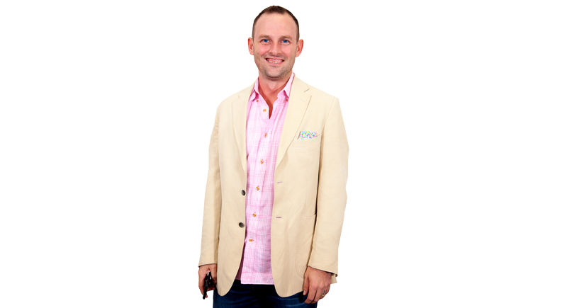

<section class="page-conent-area">
   <section class="teammember-description">
           <div><a href="/brandon"></a>
                <h3><a href="/brandon">Brandon Dufour</a></h3>
            <span>Co-Founder and CEO</span>
            <div class="profile-item-social">
                    <a href="https://twitter.com/brandondu4?lang=en" target="_blank"  class="twitter">
                            <i class="fa fa-twitter" aria-hidden="true"></i>               
                    </a>
                    <a href="https://www.instagram.com/brandondu4/?hl=en" target="_blank" class="instagram">
                            <i class="fa fa-instagram" aria-hidden="true"></i>                    
                    </a>
                    <a href="https://www.linkedin.com/in/brandondufour/" target="_blank" class="linkedin">
                            <i class="fa fa-linkedin" aria-hidden="true"></i>                    
                    </a></div>
                    </div>
           <article>
          <h3>You’re Co-Founder of <span class="shrpr"><span>s</span><span>h</span><span>r</span><span>p</span><span>r</span></span>, how did it all start?</h3>
          <p>The vision for shrpr started happening for me in late 2015. The Education system has always bothered me, but especially after I had a son that was going to have to participate in it. It's the typical "there has to be a better way to do this" that happens for entrepreneurs. At this time, I was in the process building my first company, The Next Street, a driving school in Connecticut. We recognized then, as we do now, that autonomous cars would eventually disrupt our business and we would need something to pivot to. With this in mind, I really started brainstorming how we could use what we know about for profit education and apply it to a new track for learning.</p>
          <p>I was introduced to Miles by a mutual friend, and instantly the energy around the concept of an education platform took off. shrpr was born, the team was assembled, and now we're here, trying to disrupt traditional learning. Because, there has to be a better way.</p>
          <h3>What's your favorite aspect about working on Shrpr?</h3>
          <p>I love working with a blank canvas. shrpr is fun because we aren't trying to fix something, we are building something new. This allows my mind to go creatively wherever it wants to go. I also love building. I love seeing the way I want it to be, and then working with our talented team to make that vision a reality. There is a real sense of pride as we keep finishing features, developing, building and creating this new thing. Finally, the energy and passion around our Massive Transformative Purpose that exudes from every one of our team members keeps affirming to me that we are working on a problem worth solving.</p>
          <h3>Have you ever wanted to learn something new but just did not have time to do it?</h3>
          <p>Every single day. I would love to learn Mandarin or Spanish. I live on a farm and feel that I need to learn more about small engine repair. I'd like to get a lot better at photography. The hardest part for me, as I think we are learning is the case for most people, is starting. Disrupting my habits and routines to create the time needed to gain this new knowledge is the barrier, and we are trying to take steps in shrpr to eliminate it.</p>
          <p>I'm also upset that my parents didn't make me take guitar or piano lessons as a kid. I'm always so impressed when someone can sit down at a party or in a bar and start playing. I've tried to learn in adulthood, and my brain just can't handle the information.</p>
          <h3>I hear you are a big Yankees fan but live in CT what happend?</h3>
          <p>I like winning, and being raised in the 90's and early 2000's, the Yankees did a lot of winning. And the Red Sox didn't. That, and my father is a massive Yankees fan, so I really had no choice but to be a Yankees fan. Connecticut has our fair share of Yankees Pride. There are always the groups of people that love pain and thus support those strange Boston Sports teams, or worse, The Mets, but for me, it's all Yankees, all the way.</p></article>
   </section>
</section>
